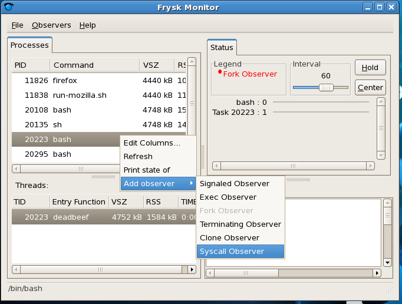
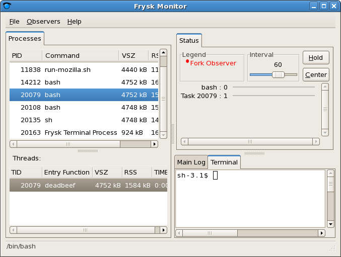
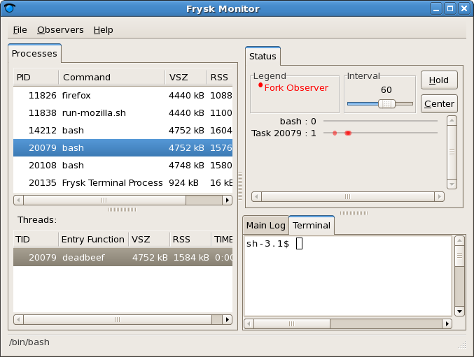
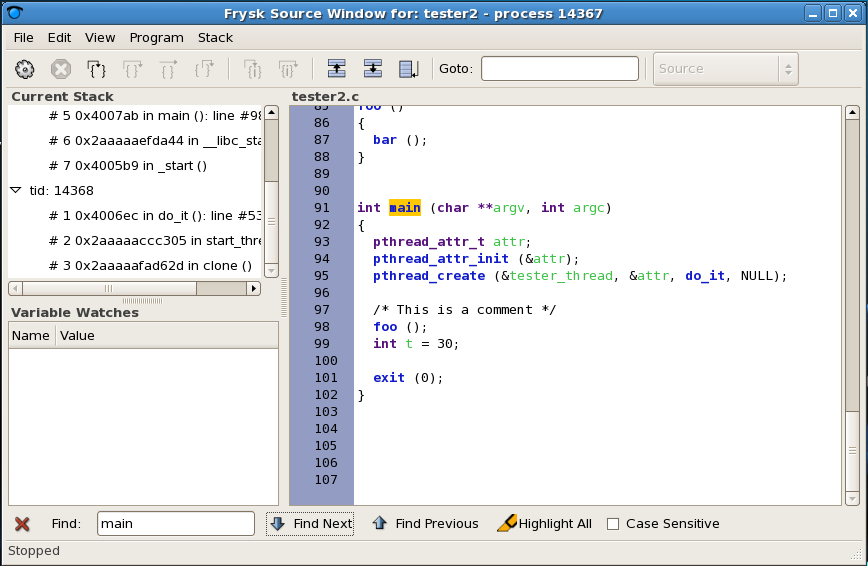

|
|
Here are a few examples of how frysk can help:
-
K., a compiler developer, spends a lot of time running the
testsuite,constantly monitoring for compiler crashes. For each crash,
K. then has to go back and reproduce the failing scenario under the
debugger so that it is possible to diagnose what is going wrong.
Using frysk, K. can set up:
- An exit observer that alerts K. that the test compiler is crashing (and gives K. an opportunity to debug it).
- A trace observer that logs key parts of compiler as it runs.
As soon as the compiler crashes, K. is alerted, and can start
analyzing the problem.
-
G., a GNU/Linux SysAdmin, is having trouble with the web
server.Every so often, but always at 2am, the shopping-cart daemon
will repeatedly crash when being started. G., using
frysk, can implement a custom observer script that, when a repeated exec/crash is detected:
- Runs a pager to notify G. of the problem
- Snapshot the system
- Saves the trace log
- Disables the shopping-cart.
G., on receiving the page, can first login and restart the server, and second save the captured state for later off-line analysis by the development group.
-
J., a first year university student, is trying to understand how their first program works (or doesn't). In class, the lecturer has shown J. how to trace a program's variables by hand.
J. instead turns to frysk, requesting that it trace all the program's variables
as the program is run.
Then, using
frysk's trace view, J. is able to both see all the variables and their values,
and navigate back to the source code to where each variable assignment occurs.
frysk Images
Last updated 2005-12-05.
Below is a work-in-progress snapshot of a process view.
A user is in the process of adding an observer to the bash process.
In addition to being logged, a user can associate actions to an observer.
Examples of observers and actions include:
- monitor TestRunner processes prompt to kill when one exceeds more than 5 minutes of cpu
- monitor gnome-terminal, and its children prompt for the source browser when the program
eclipse is started.

Next is a screenshot of the same window, after the observer on
fork() has been set.

Below is the result of monitoring the process with the fork observer set.
There was a fork event, as displayed in the timeline window.

Next is how the timeline window displays multiple events triggered when multiple observers have been set (here, the events were hardcoded, obviously).
Below is how to navigate to the source window from the process monitor window.
Next is a partial mockup (some parts were taken from a snapshot) of the source view window.
On the left hand side is the stack and variable trace, and in the middle the corresponding source.
Below, is a text search run in the source window.

Finally, a sequence of screenshots that display how, given inline code (here
do_something()
,
b(), and
f() were inlined),the source window can display it in place.
|